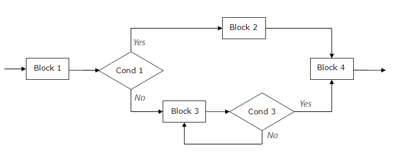

The Python examples we have seen so far are pretty simplistic. The execution of a Python program (sometimes called a script) is typically not linear or sequential. Certain conditions cause branches, loops, etc.

The partial chart above depicts the following flow: